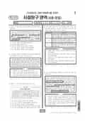

문제지

2026학년도 대학수학능력시험 · 2025년 11월 시행
2026학년도 수능 사회탐구 사회·문화 1등급컷은 원점수 44점(추정), 표준점수 최고점은 70점입니다.
원점수 1등급컷은 공식 발표값이 아니라 EBSi·입시기관 값입니다. 등급별 값은 등급컷 표, 출처 구분은 데이터 원칙에 있습니다.

시험지를 먼저 풀어 보세요. 등급컷·표준점수·난이도는 흐리게 가려 뒀어요.
| 등급 | 원점수 | 표준점수 | 백분위 | 누적 |
|---|---|---|---|---|
| 1 | 44 | 65 | 95 | 5.73% |
| 2 | 41 | 62 | 89 | 12.24% |
| 3 | 37 | 59 | 77 | 24.61% |
| 4 | 32 | 54 | 61 | 40.64% |
| 5 | 24 | 47 | 39 | 62.2% |
| 6 | 17 | 41 | 23 | 78.57% |
| 7 | 12 | 36 | 11 | 89.94% |
| 8 | 8 | 33 | 4 | 96.08% |
등급별 컷 · 입시기관 5곳 원점수 추정 종합(EBSi·메가스터디·이투스·종로학원·대성마이맥) · 만점 50점
정답 변경 없음
원문 표에서 이 과목 문항을 찾지 못했어요
한국교육과정평가원이 교육부 보도자료로 공개한 표준점수 도수분포로 계산했습니다.
발행 기관: 한국교육과정평가원(KICE). 파일 위치: 이 사이트가 보관한 사본. 저작권은 발행 기관에 있습니다. 원본과 다르거나 게시 중단이 필요하면 연락처로 알려 주세요. 등급컷 출처 구분은 데이터 원칙에서 설명합니다.
막대 색은 역대 대비 난이도 · 진한 막대가 이 시험 · 막대를 누르면 그 회차로 이동